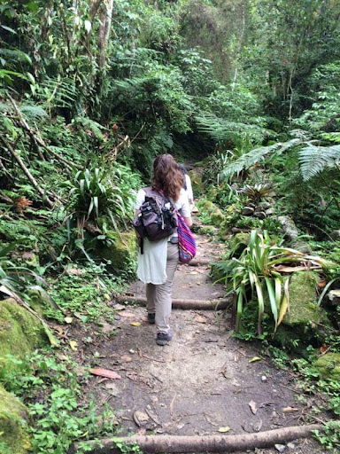

Vision Quests

Connecting with nature and honouring The Earth as the mother who never judges and loves us unconditionally is a profound aspect of The Ancient Wisdom of The Medicine teachings. The practise of a Vision Questing enables us to explore our relationship with Nature in depth. Journeying into the heart of silence to see what is so often unseen, and hear the voice of our true divinity reflected in the voice of The Mother who never leaves us. Pacchamama, The Earth who provides all we need to thrive and live abundantly, in harmony with all our relations. The indigenous tribes from the Americas called this “ The place of belonging “ our true home where we find peace and a new vision for our lives guided by the Spirit of Nature. Vision Quests are offered for individuals or small groups who wish to connect with The Earth and be guided back to their original unconditioned state of being. They include Shamanic journeying meditation practises and contemplation in preparation to go into the silence, time spent alone in nature, and finish with ceremony to integrate the wisdom gained through this experience.